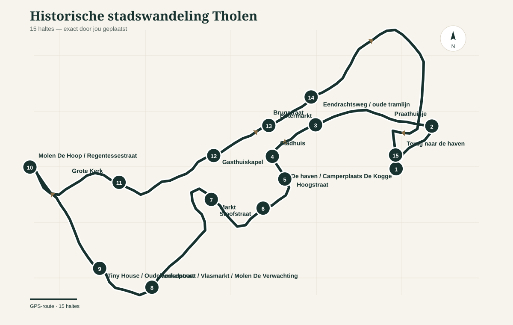

Historische Audiowandeling Tholen
15 haltes
GPS-route
± 3 km
offline kaart
GPX downloaden
Start wandeling + GPS
Routekaart
GPS nog niet gestart. Tik op “Start wandeling + GPS” om GPS te activeren.

Jouw positie
De routekaart gebruikt de door jou aangeleverde GPS-track en de 15 door jou geplaatste haltes.
‹
›